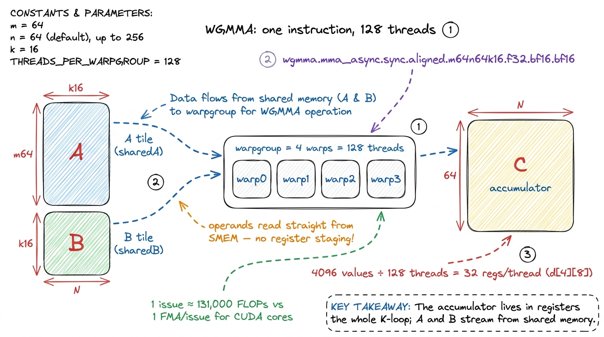
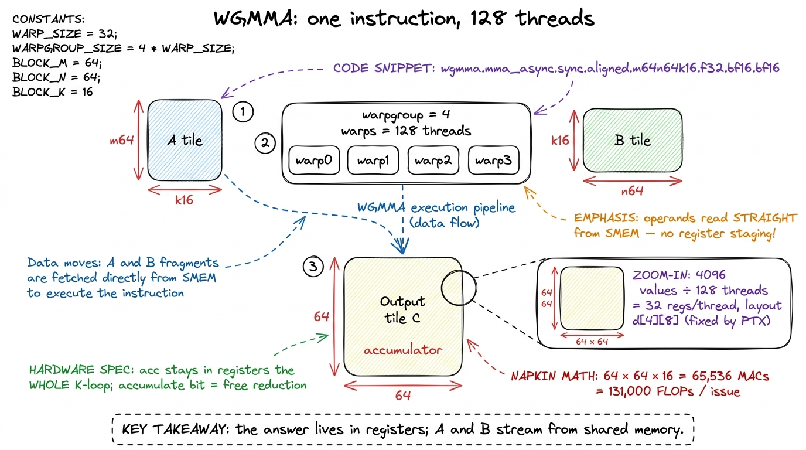
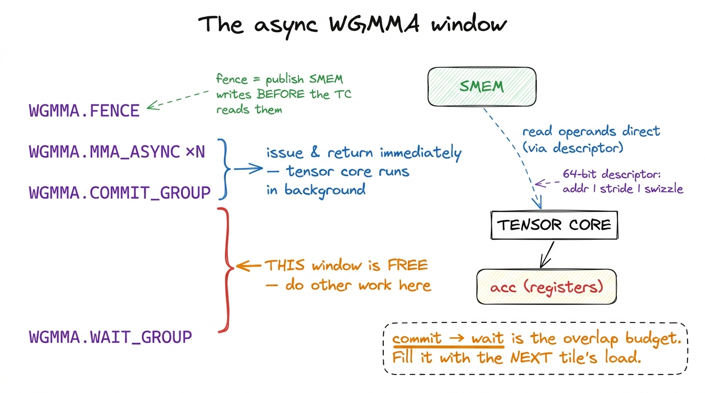
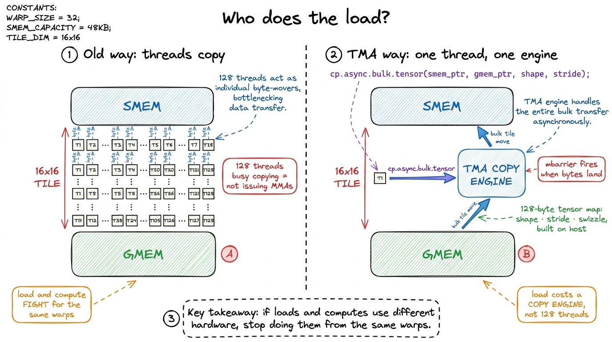
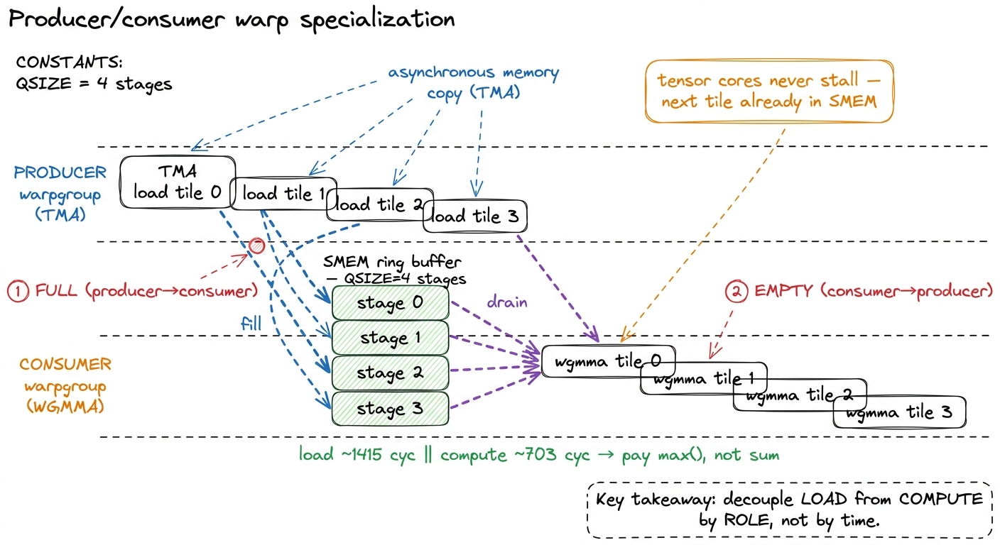
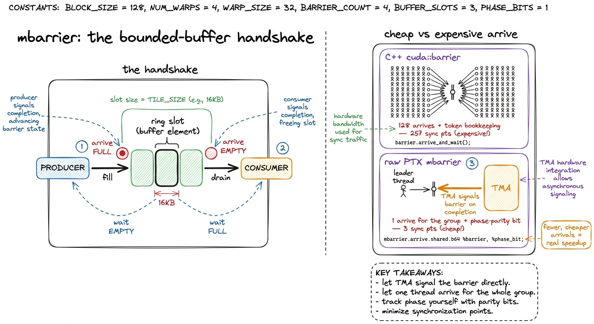
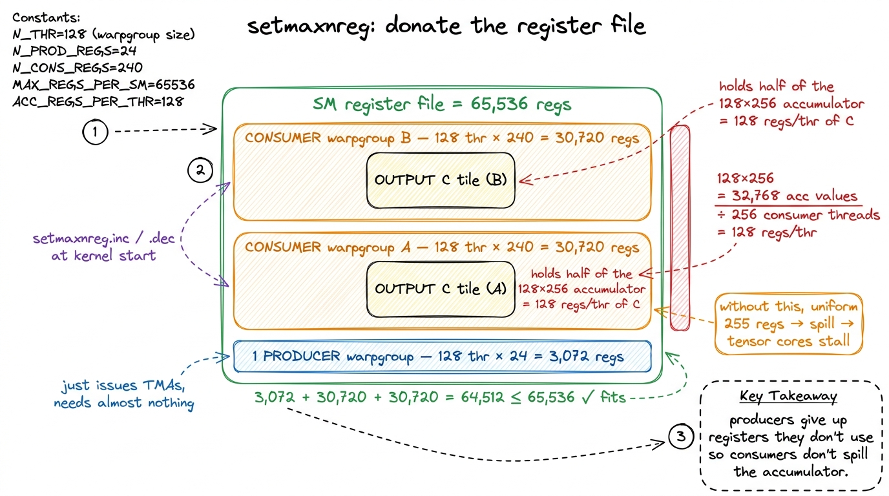
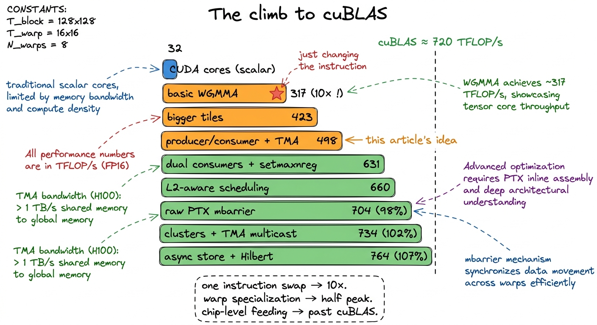

WGMMA & warp specialization WGMMA
By the end of the GEMM ladder we had reached 93.7% of cuBLAS on FP32, and every trick that got us there was a variation on a single theme: keep the math units fed. Stage tiles in shared memory, reuse them across a block, vectorize the loads, tune the tile shape until the arithmetic units almost never stall. It was a satisfying climb. But I want to start this article by admitting something uncomfortable about where that climb ended.
The whole ladder was fighting with one hand tied behind its back. It used the CUDA cores — the scalar floating-point pipeline, the little ALUs that do one FFMA (fused multiply-add) per thread — and it never once touched the tensor cores. And the tensor cores are where essentially all of the H100's advertised 989 TFLOP/s of BF16 throughput lives. Our best FP32 kernel topped out around 40 TFLOP/s. That is not "a bit short of peak." That is one twenty-fifth of what the chip can do. The tensor cores were sitting right there on every SM the entire time, dark.
So the question this article answers is simple to state and surprisingly deep to answer: how do you actually talk to the tensor cores on Hopper, and why does it force you to throw out the programming model we just spent ten kernels perfecting? We are going to build that model from scratch — no prior tensor-core experience assumed — and by the end you will understand a real, production-shaped H100 GEMM kernel that reaches ~500 TFLOP/s and beyond, more than 10× our CUDA-core best. Let me warn you up front: almost every instinct from the scalar ladder is about to be wrong, and each time one breaks I will stop and explain why.
The one number that explains everything: instruction bandwidth
Before any code, let's do a piece of napkin math that predicts the entire rest of the article.
A scalar FFMA instruction does one multiply-accumulate. One thread, one MAC, one instruction issue. A warp is 32 threads, so a warp issuing one FFMA does 32 MACs, which is 64 FLOPs (a MAC is a multiply plus an add). Fine. Now, how fast can an SM issue instructions? Each SM has 4 warp schedulers, and each can issue roughly one instruction per cycle. The H100 runs near 1.8 GHz. So the ceiling on scalar issue is about 4 schedulers × 1.8e9 cycles/s = 7.2e9 warp-instructions per second, per SM.
Here is the trap. Suppose every one of those issues were a perfect FFMA. That is 7.2e9 × 64 FLOPs = 460 GFLOP/s per SM, times 132 SMs ≈ 61 TFLOP/s. That is the hard ceiling of the scalar pipeline — not because the ALUs are slow, but because you can only issue so many instructions per second. We cannot get to 989 TFLOP/s one MAC at a time. It is arithmetically impossible. The warp scheduler would be the bottleneck long before the ALUs broke a sweat.
1 The 61 TFLOP/s figure is a rough ceiling, not a spec — real FP32 GEMM peaks lower because not every issue slot is an FFMA (you also issue loads, address math, and loop control). Our ~40 TFLOP/s best kernel was already spending most of its issue slots on FFMAs, which is exactly why it couldn't go much higher. The scheduler was the wall.
So the only way out is to make a single instruction do vastly more work. That is the whole idea of a tensor core, and it is worth saying plainly because it reframes everything: a tensor-core instruction is not "a faster multiply." It is one instruction that does the work of tens of thousands of scalar multiply-accumulates, so that the scheduler issues far fewer of them and the issue ceiling stops being the bottleneck. Hopper's version of that instruction is Warpgroup Matrix Multiply-Accumulate (WGMMA), and once you accept that the instruction has to be enormous, every strange thing about how you feed it starts to make sense.

figure rendering · Instruction bandwidth is the real bottleneck. Tensor cores win by makiOne instruction, four warps, 131,000 FLOPs
Let's meet the instruction. The scalar FFMA is issued per thread — each of the 32 lanes in a warp does its own multiply-add independently. Hopper's wgmma.mma_async is issued per warpgroup. A warpgroup is exactly four contiguous warps — 128 threads — that cooperate on one matrix multiply.2 The four warps must be an aligned group: warps 0–3, or 4–7, and so on — never a straddling quad like warps 2–5. The .aligned in wgmma.mma_async.sync.aligned is a promise you are making to the hardware, not a request it grants you. Hand it a misaligned quad and it misbehaves silently.
The canonical shape is written right into the instruction's name:
wgmma.mma_async.sync.aligned.m64n64k16.f32.bf16.bf16Read it left to right, it is completely literal. Multiply a 64 × 16 tile of A by a 16 × 64 tile of B, accumulate into a 64 × 64 tile of C, keep C in FP32 (.f32), and take BF16 inputs (.bf16.bf16). On Hopper the m and k are fixed at 64 and 16; only n varies, chosen from a fixed menu — 8, 16, 32, 64, ... up to 256. Bigger n is almost always faster: m64n256k16 does one fat instruction where four m64n64k16 calls would each pay their own issue and fence overhead. The cost is register pressure on the accumulator, which is the tension the whole back half of this article is about.
Now count the FLOPs in one m64n64k16 issue. Multiplying a 64×16 by a 16×64 produces a 64×64 output, and each output element is a dot product of length 16 (16 multiply-adds). So the total is 64 × 64 × 16 = 65,536 MACs, which is 2 × 65,536 ≈ 131,000 FLOPs — from one instruction. Compare that to the 64 FLOPs a warp got from one scalar FFMA: roughly a 2,000× leverage on issue bandwidth, exactly the escape from the ceiling we computed above.
Where does that 64 × 64 output tile live? This is the first place your CUDA-core intuition breaks, so let's slow down. It lives in registers, spread across the whole warpgroup. The register file is 256 KB per SM — 65,536 32-bit registers total — but a single thread can address at most 255 of them. A 64 × 64 FP32 accumulator is 4,096 values. There is no possible way one thread holds 4,096 values in 255 registers. So WGMMA distributes the accumulator: each of the 128 threads owns a fixed slice of the output. For m64n64k16, that is 4096 / 128 = 32 accumulator registers per thread, laid out in the exact d[4][8] pattern the PTX spec dictates.3 You do not get to choose which output element lands in which thread's register — the fragment layout is fixed by PTX §9.7.15. If you want to store C back correctly or fuse an epilogue (a bias, a GELU), you must follow that mapping element-for-element. This rigidity is the tax for the instruction being so cheap: the hardware picks the layout that is fast for it, and you conform.
And here is the payoff of it living in registers: the accumulator never leaves registers across the whole K loop. A single bit on the instruction chooses whether this issue computes C = A·B (overwrite) or C = A·B + C (accumulate). So walking across the K dimension — the "reduction" that sums up all the little tile products into the final answer — costs nothing extra. No re-zeroing, no reload, no store-and-add. You issue the first WGMMA with accumulate-off, then every subsequent one with accumulate-on, and the running sum just lives in the register file the entire time.

figure rendering · The WGMMA shape, zoomed to one thread. A warpgroup-wide instruction muAsync, and where the inputs come from
The second surprise is where the inputs come from, and it breaks CUDA-core intuition even harder. On the scalar ladder we hand-loaded A and B fragments from shared memory into registers, and then issued the FMAs on those registers. WGMMA skips register staging entirely. The A and B operands are read directly out of shared memory by the tensor core itself, described not by an ordinary pointer but by a packed 64-bit matrix descriptor.
That descriptor is a tightly bit-packed little word. Its fields, straight from the PTX spec: bits [13:0] hold the SMEM start address, bits [29:16] the leading-dimension byte offset, bits [45:32] the stride offset, and bits [63:62] the swizzle mode — all measured in 16-byte units.4 You build the descriptor with __cvta_generic_to_shared() to convert a normal pointer into a real SMEM address, then pack the byte offsets shifted right by 4 (that's the ÷16). The top two bits carry the swizzle mode; set them wrong and the tensor core silently reads a transposed or scrambled tile. The kernel runs, produces garbage, and gives you no crash to debug — one of the more miserable bugs on Hopper.
Now the _async suffix, which is the hinge the whole article turns on. When a warpgroup issues wgmma.mma_async, the instruction returns almost immediately. The tensor core goes off and does the multiply in the background while the warpgroup's threads run ahead and do other things. You do not wait for the result at the issue site. Instead you batch several issues and bracket them with three fences:
wgmma_fence(); // publish SMEM writes so the tensor core may read them
#pragma unroll
for (int n = 0; n < N_TILES; ++n)
wgmma_m64n64k16(desc_a[n], desc_b[n], acc, /*accumulate=*/n != 0);
wgmma_commit_group(); // seal this batch of async MMAs into a group
wgmma_wait_group<0>(); // stall until the group retires; acc now validEach fence earns its keep. The wgmma.fence.sync.aligned before the batch tells the tensor core that every prior write into the SMEM tiles is complete and visible — so it is safe to start reading them. Skip it and you get a read-before-write race. Then commit_group seals the batch into a named group, and wait_group<0> blocks until every MMA in the group has retired and the accumulator registers hold valid numbers.
The space between commit and wait is the most important thing in this entire article. That window is free time. The tensor core is grinding away in the background; the warpgroup's threads are not blocked; and whatever useful work you can cram into that gap is work you get for free. Everything from here on is a fight to fill that window.

figure rendering · The async window. Everything between commit and wait is free time theThe honest failure: who loads the next tile?
Let me write the obvious kernel and watch it fail, because the failure motivates everything clever that follows.
The naive structure is a single warpgroup running one loop: load the next K-tile of A and B into shared memory, issue WGMMA on it, load the next tile, WGMMA on it, and so on. Wire it up, run the profiler, and the result is deflating. The tensor cores are idle most of the time. They blast through a batch of MMAs in a flash and then sit there while the exact same warps trudge through the next tile's load from global memory.
We have recreated the naive-kernel disease, just one level up. On the scalar ladder the problem was the ALU waiting on memory; here it is the tensor core waiting on memory. And the root cause is identical: the same threads are responsible for both loading and computing, and threads can only do one thing at a time. While the warpgroup is issuing load instructions, it is not issuing MMAs. The free window we fought to create is being spent on the very thing it was supposed to overlap with.
Let's ground it in real numbers, because Hopper makes them concrete. If you profile the three phases of one tile's work, you see something like: load ≈ 1,415 cycles, tensor-core compute ≈ 703 cycles, store ≈ 4,572 cycles.5 Those cycle counts are from a real Hopper GEMM profile (BF16, large tiles). The exact numbers depend on tile shape and matrix size, but the shape of the story is robust: the load is roughly 2× the compute, and the epilogue store is bigger than both. If load and compute run back-to-back on the same warps, you pay 1415 + 703 serially per tile. If they overlap, you pay roughly max(1415, 703) — you get the compute almost for free. The compute is the cheapest of the three. If loads and computes run serially on one warpgroup, you spend 1415 + 703 ≈ 2118 cycles per tile and the tensor core is busy for only a third of it. Overlap them and you pay about max(1415, 703) = 1415 — the compute nearly vanishes into the shadow of the load. That overlap is a ~2× speedup waiting to be claimed, and the naive single-warpgroup kernel claims none of it.
The load engine that does not use threads
Before we fix the "same threads do both" problem, Hopper hands us a second gift that makes the fix clean. On the scalar ladder, a load from global to shared memory was a bunch of threads: 128 threads each computing an address and copying a chunk. That is what made loading and computing compete — both are thread work.
The Tensor Memory Accelerator (TMA) breaks that. TMA is a dedicated copy engine, a piece of hardware whose only job is to move a 2D tile from global memory into shared memory. A single thread kicks it off; the copy then runs asynchronously in the background, occupying the copy engine, not the 128 threads. The transfer is described by a 128-byte tensor map — shape, strides, swizzle — that you build once on the host with cuTensorMapEncodeTiled() and pass into the kernel.6 TMA also does the SMEM swizzling for you, and this is why TMA and WGMMA are a matched pair. The 128-byte-swizzled layout that WGMMA's matrix descriptor expects is exactly what CU_TENSOR_MAP_SWIZZLE_128B writes. One instruction produces the layout the other consumes. Hand-rolling that swizzle to avoid the 32-bank conflicts is possible and documented nowhere pleasant — let TMA do it.
Read that again and feel the shift: a load no longer costs you threads. One thread says "go," the copy engine hauls the bytes, and a barrier fires when they land. So now the question sharpens into its final form. If loads are done by a copy engine and computes are done by tensor cores — two entirely separate pieces of hardware — then why are we still doing them from the same warps? Why not split the warps by job?

figure rendering · TMA turns a load from thread-work into engine-work. That frees the warWarp specialization: producers and consumers
So we split the warps by role. This is warp specialization, and it is the heart of every fast Hopper GEMM in production. Inside one thread block we launch different warpgroups that run completely different code:
- The producer warpgroup does nothing but issue TMA loads. Its loop: wait until a slot in a shared-memory ring buffer is free, fire a TMA to fill that slot with the next
K-tile ofAandB, signal that the slot is now full, advance to the next slot. It never touches a tensor core. - The consumer warpgroup(s) do nothing but WGMMA. Their loop: wait until the next ring-buffer slot is full, issue the
wgmma.mma_asyncbatch on it, signal that the slot is now free to refill, and accumulate into their register-residentC.
The two roles rendezvous through a shared-memory ring buffer of K-tiles — a software pipeline whose depth (call it QSIZE) is typically 3, 4, or 5 stages. Deeper is not always better: all QSIZE stages live in shared memory at once, and the H100 gives you at most 228 KiB of SMEM per SM. With big 128×256 tiles a single stage is large, so you drop QSIZE to 3; with the small tiles of a first draft you can afford 5. You set the number by dividing your SMEM budget by the size of one stage — pure napkin math, done once. The producer runs ahead, filling stages 2, 3, and 4 while the consumer is still grinding on stage 1. As long as the producer stays ahead, the consumer's wgmma.wait_group never actually stalls — the next tile is always already in SMEM by the time the tensor core reaches for it. And that is the whole objective: the tensor cores saturate.
Let me connect this to the cycle numbers from before. The producer's job is to keep the ring full; the consumer's 703-cycle compute is fully hidden behind the producer's 1415-cycle loads because they run on different hardware at the same time. The consumer never waits. The ~2× overlap speedup we identified is exactly what specialization delivers, structurally, by construction.

figure rendering · The pipeline. Producers run ahead filling the ring; consumers drain itmbarriers: the handshake in silicon
The producer and consumer must not call __syncthreads() with each other. They are not even the same warps, and a block-wide barrier would force the fast one to wait on the slow one — defeating the entire overlap we just built. Instead they coordinate through mbarriers, shared-memory barrier objects Hopper exposes in hardware (via cuda::barrier at block scope, or the raw PTX mbarrier API underneath).
The pattern is the textbook bounded-buffer producer/consumer handshake, and it is worth spelling out because it is exactly what you would design on a whiteboard. Each ring slot gets two barriers: a full barrier that the producer arrives on once its TMA completes, and an empty barrier that the consumer arrives on once it has finished reading the slot. The producer waits on empty before it dares overwrite a slot (don't clobber data the consumer hasn't read yet); the consumer waits on full before it reads a slot (don't read a tile that hasn't landed yet). Two conditions, two barriers, a clean rendezvous.
Now the part that separates a textbook implementation from a fast one — a genuinely non-obvious optimization, so let's reason it out. TMA can be told to signal an mbarrier directly on completion. So the producer's "the tile has landed" signal is a single hardware event, not 128 threads each calling arrive(). The friendly high-level C++ cuda::barrier token API tends to pay per-thread arrivals and token bookkeeping. On a tight K-loop that runs hundreds of times, those add up to a real, measurable slice of the runtime.
Dropping to the raw PTX mbarrier.arrive / mbarrier.try_wait intrinsics lets one thread arrive on behalf of the whole group and skips the token machinery — you just track a phase parity bit yourself (a barrier flips phase each time it completes, so you flip a bool to know which phase you're waiting for). In one real worklog this migration collapsed synchronization from 257 sync points down to 3 — one per role — and lifted the kernel to ~704 TFLOP/s as a final tuning step. That is a lot of speed hiding inside "how you say wait."

figure rendering · The handshake is a classic bounded buffer. The speed is in making theRegister reallocation: give the file to whoever needs it
There is one more knob, and without it the whole scheme quietly collapses — so let's understand exactly why.
Recall that the consumer's entire C accumulator is register-resident. For a big 128 × 256 output tile, that is a lot of registers. Do the math: 128 × 256 = 32,768 FP32 values must live in the register file at once. Spread across one 128-thread warpgroup, that is 256 registers per thread — but the hardware cap is 255. It does not fit. You are one register over the wall.
Two moves fix it, and they compose. First, use two consumer warpgroups instead of one, so the 256-tile is split across 256 threads: now it's 128 registers per thread, comfortably under the cap.7 This is why a very common Hopper layout is two consumer warpgroups sharing one producer — 384 threads total. It halves per-thread register pressure on the consumers and keeps all four tensor cores on the SM busy. One producer can comfortably outrun two consumers because TMA is limited by copy-engine bandwidth, not by issue rate — a single producer thread can fire loads fast enough to feed both. Second — and this is the Hopper-specific trick — reallocate registers between warpgroups at runtime. The producer issues TMAs and touches almost nothing; it does not need many registers. The consumers are drowning in accumulator state; they need all they can get.
Hopper's setmaxnreg PTX directive lets you donate the register file to the warps that actually need it. A typical setting: 240 registers per consumer thread, 24 per producer thread. Check the budget: 2 consumers × 128 threads × 240 + 1 producer × 128 threads × 24 = 61,440 + 3,072 = 64,512 registers, just under the 65,536 the SM has. It fits precisely, and it fits only because you took the registers away from the producer — which was never going to use them — and gave them to the consumers, which would otherwise spill. And a register spill in the inner loop is death: it turns a register access (~1 cycle) into a local-memory round trip and the tensor cores start stalling on their own operands. Uniform allocation forces exactly that spill. setmaxnreg is what lets the whole specialized design fit inside one SM's register file.

figure rendering · Register reallocation. The producer donates its share so the two consuStacking it up: from 40 to 700+ TFLOP/s
Now let's watch the numbers climb, because the worklog rhythm makes the payoff of each idea concrete. Every step is one hypothesis, one change, one measurement.
We start where the scalar ladder left off. A CUDA-core FP32 kernel adapted straight over: about 32 TFLOP/s. That is the ceiling of doing it one MAC at a time, and it is our baseline.
Hypothesis: just issuing WGMMA at all should be transformational, because of the 2,000× issue-bandwidth leverage. Swap the inner loop from scalar FMAs to a basic wgmma.mma_async — even naive, even with the same-warps-do-both flaw — and it jumps to ~317 TFLOP/s. A ~10× leap from a single change, exactly as the instruction-bandwidth math predicted. The tensor cores were always the point.
Hypothesis: bigger n amortizes the per-instruction overhead. Move to larger tiles and the fat m64n256k16 variant so one instruction covers a wide slab of output: ~423 TFLOP/s.
Hypothesis: split loads from computes by role so the tensor cores stop waiting on memory. Introduce the producer/consumer pipeline with TMA and a ring buffer — the central idea of this article: ~498 TFLOP/s. This is the payoff of the overlap we computed by hand; the compute cost hides inside the load.
Hypothesis: go to 128×256 tiles with two consumer warpgroups and reallocate registers so nothing spills. Add setmaxnreg and dual consumers: ~631 TFLOP/s. Bigger tiles mean more reuse per byte loaded, and register reallocation is what makes those tiles physically fit.
From here the remaining gains are no longer about the inner loop — they are about feeding the SMs from HBM and L2 across the whole chip, and I'll preview them because they are the next article. Smarter block scheduling that groups spatially-adjacent output tiles pushes the L2 hit rate to ~83% and lifts us to ~660 TFLOP/s. Switching to the raw-PTX mbarrier handshake — the cheap-arrival trick from two sections ago — collapses 257 sync points to 3 and reaches ~704 TFLOP/s, which is already about 98% of cuBLAS. Then thread-block clusters with TMA multicast — where neighboring SMs in a cluster share one HBM read of a B tile instead of each fetching it — crosses ~734 TFLOP/s, ~102% of cuBLAS. Async TMA stores and Hilbert-curve tile scheduling for even better L2 locality top out around ~764 TFLOP/s, ~107% of cuBLAS at N=4096.8 "Beating cuBLAS" deserves an asterisk. These numbers are at a specific, friendly size (N=4096, BF16, square) where a hand-tuned kernel can exploit the exact tile and L2 geometry. cuBLAS has to be good across every shape, including the awkward, skinny, and unaligned ones. Matching it at one sweet-spot size is a real achievement and a genuinely useful teaching result — it is not the same as replacing cuBLAS in production. This is also roughly the regime where CUTLASS and the kernels inside FlashAttention and vLLM actually live.

figure rendering · The full climb. The single biggest jump is just issuing WGMMA at all;Where this lands, and what's next
Step back and look at the shape of what we built. The scalar ladder was a story about tiling and reuse — keep one kind of unit, the CUDA core, fed. This article was a story about specialization and overlap — accept that Hopper has several different units (tensor cores, the TMA copy engine, mbarriers in hardware) and choreograph them so each one is busy while the others work. The central mental model, the one to carry away, is the async window: WGMMA returns immediately, and everything good comes from filling the gap between commit and wait with the next tile's load, done by a different warp on a different engine.
Every piece we added exists to protect that overlap. TMA makes a load cost a copy engine instead of 128 threads. Warp specialization puts loads and computes on different warps so they stop competing. The ring buffer gives the producer room to run ahead. mbarriers let the two roles rendezvous without a block-wide stall. setmaxnreg makes the register-hungry consumers fit. Pull any one and the tensor cores start waiting again.
And that is the real result: from tensor cores that were idle most of the time to tensor cores that are essentially always busy — from ~40 TFLOP/s on the CUDA-core ladder to ~500 TFLOP/s with a clean producer/consumer WGMMA kernel, before any chip-level tricks at all, and past cuBLAS once we add them. This is the same machinery inside CUTLASS, inside the GEMMs FlashAttention calls, and inside the kernels vLLM leans on to serve DeepSeek and Llama on H100 fleets today. It is not academic; it is the current state of the art, and you now understand why every part of it is shaped the way it is.
We are not fully done, but the remaining gap is a different problem. It is no longer about the inner loop — the tensor cores are saturated. It is about feeding the SMs from HBM and L2 across all 132 of them: thread-block clusters so neighboring SMs share tiles, TMA multicast so one HBM read fills several SMs at once, and block scheduling that respects the ~50 MiB L2's two-partition geometry so hot tiles stay resident. Those moves carry a well-pipelined WGMMA kernel from half-peak past 100% of cuBLAS — but none of them matter until the tensor cores are saturated, and that saturation is exactly what warp specialization buys. The next article picks up the chip-level story: thread-block clusters and TMA multicast.